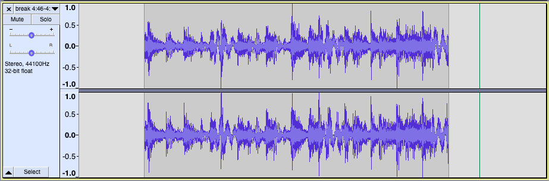

Doriella Du Fontaine
In this essay, I look at an old, obscure song Doriella Du Fontaine.
When you first hear Doriella Du Fontaine, it sounds like a run-of-the-mill jam session: first, Jimi sets up a funk groove on his guitar, then as Buddy sets up the beat on the drums, the listener is launched into the tale of Miss Fontaine, told by Lightnin’ Rod in a typical raunchy, vernacular New York style. The song tells a tale of manipulation and fate in a proto-rap spoken word format.
The track was recorded at the Electric Ladyland, Jimi’s New York studio, in November 1969. While the track was recorded at a time when New York was the beating heart of hip-hop culture, it wasn’t released until years later. Yet, this coincidental jam session went on to influence hip-hop greatly, forming a bridge between the vernacular culture of “toasts” and “dozens” and the modern music industry’s hip-hop. To that end, this piece was so ahead of its time, that writer Gene Santoro described the song as “foreshadow[ing] the rap-meets-metal crossover”1. It is also notable that the artists assembled at this jam (Buddy Miles, Billy Cox and Larry Young) later became Hendrix’s Band of Gypsys2, whose work established the early P-funk scene.
While the standalone track Doriella Du Fontaine (DDF) may seem vanilla compared to the rest of Jalal’s and Hendrix’s discography, which contains countless billboard hits, the historical significance of this piece makes it a gem worth examining.
An unlikely meeting
Jalal Nuriddin (Lightnin’ Rod)
Before meeting Jimi, Jalal describes his personal interests as “black music, which was more into Bebop, Blues, Rhythm & Blues, Doo Wop and Afro-Cuban Jazz, with Gospel as my harmonic source point”2. In Jalal’s discography, DDF marks a point of transition away from Afro-Cuban instrumentation: from bongos and maracas in his previous tracks (e.g. When the Revolution Comes from The Last Poets) to jazz/funk instruments like keyboard and bass guitar in his subsequent work (e.g Sport from Hustlers Convention).
Jimi Hendrix2
Jimi first discovered The Last Poets (and Jalal) after hearing their self-titled album pre-release through their shared producer Alan Douglas. The message delivered by their work resonated with Jimi, someone who had attempted to express his own political ideas with music such as his rendition of The Star-Spangled Banner (the national anthem of the United States)3.
After the massive success of The Jimi Hendrix Experience, in 1968, Jimi looked to expand his music in fresh, new directions. For Jimi Hendrix, DDF was not about money, as he told Jalal, “And I don’t want no money for this, I just want to have fun and jam, so if their [sic] is any money to be made off the track, you and Douglas can work it out.”2
Lyrics
Producer Alan Douglas described DDF as a “jail toast”, a mashup of stories Jalal had heard during his time in prison4. While other early toasts, such as Rudy Ray Moore’s “The Signifying Monkey” restrict themselves to folk tales, there is a clear influence of prisoners’ ideology on DDF: the use of edgy language, normalizing casual drug use, and the underlying idea of a “happily ever after” based on honey trapping or espionage.
The lyrics themselves are structured as a casual narration of an incident by Jalal to his friend, Jimi. Jalal seems to be in no hurry, and he paces himself to create a connection to the listener, often calling to his friend (“Jim”/“Jimi”) for a pause.
The poetic elements grow on the listener as well, the beginning of the track has few instances of rhyming words and alliteration, but as we approach the end of the track, the density and variance of the rhymes is much higher: internal rhymes, multi-syllable rhymes and even rhymes across verses, nothing is off-limits for DDF. “Appendix A: an objective look at the lyrics” tries to show a visual representation of this observation.
Spoagraphics
Jalal Nuriddin described jail toasts as “spoagraphics” or “spoken pictures”4. I think his description of toasts is closely related to the “metaphorical-imagistic” aspect of signification described by scholars Geneva Smitherman, Henry Gates, and Imani Perry5. As Imani Perry puts it, one of the most important reasons to use metaphors and similes in hip-hop is to “engage the imagination and expand or transform the universe in which the MC dwells. With them, the author creates a space of possibility.” Jalal uses the narrative describing the “sunny lands of New Mexico” in verses 11, 12 and 13 to accomplish this in his own way. Moreso, his exaggerated description of his life creates a larger space of possibilities for each subsequent act, making the listener more curious. At the same time, the listener is left with the image of a boasting playboy that is so unrealistic that the very thought of it is entertaining.
Comparison with As Nasty As They Wanna Be (2 Live Crew)
From the perspective of obscenity, I think this track is at an interesting crossroads between hip-hop’s vernacular nature and the use of obscenity as a tool for entertainment. While in hindsight, the use of obscenity in this song would be considered mild at best compared to its future counterparts, like 2 Live Crew’s As Nasty As They Wanna Be, it is important to note that the song was recorded in 1970. At the time, Jimi’s audience was largely “white youth”2 and if the song were to be released at the time of recording, I suspect their response would have been harsh.
While I agree with Kimberle Crenshaw’s views on the 2 Live Crew vs. Florida obscenity trial6, particularly those questioning the value of misogyny and/or racism, even when they are almost inseparable from the cultural history of an ethnic group, I think DDF is a perfect example that describes the “artistic” value of obscenity. DDF treads the fine line between the offensive and the “humorous” quite neatly. There are clear instances of misogyny and boastings of the artist’s sexual prowess, but, unlike 2 Live Crew’s As Nasty As They Wanna Be, they are clear exaggerations of stereotypes and hyperboles. As Henry Louis Gates, Jr. put it in his testimony, they only intend to make the listener “bust out laughing”7, similar to how The Signifying Monkey might have. While it is hard to put into words the differences between the “right” way and the “wrong” way, I think one of the most notable distinctions is that DDF does not rely on misogyny as a crutch for entertainment: Miss Fontaine’s tale is not interesting because of the misogynistic parts, it is interesting despite them. The misogyny only serves to accentuate the highs and the lows.
Instrumentation
DDF’s instrumentals are an original composition featuring Jimi Hendrix on the guitar and Buddy Miles on drums and organ. Notably, the instrumentation production of this track does not seem to be as meticulous as some of Jimi Hendrix’s other works such as All Along the Watchtower (Electric Ladyland). For instance, the production doesn’t completely utilize stereophonic audio, adding to the informal jam session aesthetic of the track.
While the breaks show the track’s connections with the future of hip-hop, it is interesting to note that the track also uses music as a storytelling tool, a practice more common in past toasts and dozens. Particularly, in verse 13, the absence of background music after “Bulletin: Last night, Dixie Fair …” and in verse 15, a drum roll after “Age 25…” build up suspense.
The tug-of-war
As the track progresses and the spoken word tale gets more interesting, the guitar and drum breaks become more intricate as well8; this creates almost a tug of war for the listener’s attention. Visually, this effect can even be seen in the waveform, where breaks later in the track use drums more intentionally:

The break at 0:29 primarily relies on guitar riffs
↓
The break at 4:46 has drums playing throughout
For more information, please refer to Appendix B.
While the instruments individually contribute a “rock” feel to the song, I believe this tug of war is responsible for the groove/disco feel of the song. Even though the disco scene of New York was in its infancy in 1969, this track manages to capture its essence with the instrumentation creating a sense of urgency and uneasiness during the breaks, but fading to become only an accessory during the “spoagraphic” sections. As Peter Shapiro9 puts it:
Disco was at once about community and individual pleasure, sensation and alienation, orgy and sacrifice; it promised both liberation and constraint, release and restraint, frivolity and doom. Disco was both utopia and hell.
Comparison with Iceberg Slim’s rendition
In 1976, as part of his album Reflections, Iceberg Slim released his 3 part rendition Durealla (Du Fontaine). While both tracks had the same origins (as “jail toasts”), Iceberg’s version focuses on the story and the spoken word performance, whereas the Jimi Hendrix/Lightnin’ Rod version is a lot more experimental with the instruments.
From a purely lyrical perspective, Iceberg Slim’s toast is superior. There are a lot more intricate rhythms and poetic devices, and his accent and cadence lend themselves to the playboy character beautifully. His recitation is also useful for pointing out some errors in Jalal’s version, for example, Jalal uses “stated” instead of “slated” in verse 15. Iceberg Slim also uses a slightly different narrative structure, using a refrain “Candy, Honey, she said”. Overall, the impromptu jam session feel of the Lightnin’ Rod rendition is emphasized by the comparison with the Iceberg Slim rendition, and one might argue that the improvised feeling is at the heart of modern hip-hop.
However, the lack of Jimi Hendrix and Buddy Miles’ assertion for attention is felt quite strongly in the instrumentation. While the jazz/blues music adds a mellow, relaxed vibe to the track, there are no instrumental breaks in this rendition and none of the aforementioned “tug of war” for the listener’s attention. In fact, the jazz instruments just seem to fade away in the background.
An alternate history
While studying the origins of the song, I ran into a very interesting forum post10 where users suggested a completely different origin story for the track: one where Jimi Hendrix and Buddy Miles never even met Lightnin’ Rod!
In 2011, Celluloid Records released a limited repress of DDF. According to user Purple Jim, the accompanying press release (which, unfortunately, is not accessible anymore) said:
The project began in late 1969 with famed producer Alan Douglas recording the unmistakable Jimi Hendrix and legendary Buddy Miles rolling and groove-laden musical backdrop. Fast forward 4 years and Lightnin’ Rod (aka Jalaluddin Mansur Nuriddin) adds in his distinctive vocal soundtrack.
After discovering this, the user contacted Celluloid Records for their source, who informed him “It was Alan Douglas”. I, too, tried to contact the record label, but have not received a response as of December 2, 2019. It should be noted that it would not be uncharacteristic for producer Alan Douglas to take a jam by Jimi and re-package it as DDF, given his philosophy on remixes and overdubs11. Further, given the legal trouble (and the controversial fan response) surrounding his production of posthumous releases, it may have been in his best interests to hide the true origins of the track.
Yet, I personally think that the vocals and music are too tightly integrated for DDF to be an overdub of a prerecorded instrumental track. Besides, I find that there is almost too much evidence supporting the idea that the recording is indeed a casual jam session involving all three artists, from the personal account by Jalaluddin Nuriddin2 to books such as “Ultimate Hendrix: An Illustrated Encyclopedia of Live Concerts and Sessions”12 elaborating the context of the jam session in excruciating levels of detail.
Nonetheless, the possibility is quite intriguing, and the story is too interesting to be left out of a historical account of the track.
Appendix A: An objective look at the lyrics
While a number of different transcriptions of DDF are available on websites such as Genius.com13 and fandom.com14, they seem to be very inaccurate. While tracing the source of these inaccuracies, I found that most of the errors follow from the same source: a supplemental booklet for the album The prime time rhyme of The Last Poets15.
Below, I have listed my transcription of the lyrics, based on my own interpretation and analysis of the toast. For visual representation:
- Rhyming words in the same verse are highlighted with similar colors,
- Underlined syllables show alliteration and,
- Paragraph breaks signify an instrumental break.
I was standing on the corner in the middle of the square,
Tryin’ to make me some arrangements to get some of that dynamite reefer there.
Now, I was already high, and dressed very fly, just standin’ on the corner watchin’ all the fine hoes.
When up drove my main man Vann in his super ninety-eight olds.
Now as Vann stepped out the cat, he looked about to me, and began to speak,
When with a sexy stride, out from the other side, stepped this real fine freak.
Now she wore a black chemise dress which was considered to be one of the very best.
Her hair was glossy black and eyes a deep sea green-blue,
And her skin was a boss dark hue.
Man! She was some kind of fine!
Now, as I spoke to Vann, and I shook his hand, and I asked him “Was that his honey?”
Without no jive, this was the dude’s reply,
“Like she’s anybody’s who wants to make some money.”
He said “She’s really down and known all around as Miss Doriella Du Fontaine.
She plays her sick mind and she’s slick, and she’s one of the best in the game.
This girl was no jerk cause I’ve seen her work, she’s nice and she can use her head.
And she’s good with her crack from a long way’s back, and she’s done made me a whole lot of bread.”
Now, Vann was sporting a Panama Straw,
had a Corona-el-producto stuck out the side of his jaw.
He wore a beige silk suit that looked real silky,
He was dressed to make Rockefeller feel guilty.
Now I was dressed, I must confess, although I couldn’t compare with Vann,
It’s not that his taste is better than mine, it’s just that he’s the big money man.
“Hey, fellas,” Doriella said,
“I’m as starving as can be. How about a bite to eat?”
So we all agreed on a fabulous feed, down at the Waldorf up on the big street
Now the Waldorf was glowing in bright neon light, although this was my first flight,
We were all clean as the board of health.
Three players, that’s true, in rainbows of blue, and we painted a picture of wealth.
Now as we were dining, Vann started unwinding, and he began to run his mouth off to me.
But as we left, I dug his woman, Miss Du Fontaine, was steadily pinning on me
“Hey fellow,” Doriella said,
“Since we met I’m glad,
So here’s the address to my pad.”
So next Saturday I got real fly, and I went to see Miss Du Fontaine.
I stopped off at my main man Joe, this dude deals with snow, and I copped me some cocaine.
Now as I got to her pad, Jimi it was some kind of bad!
It was really a bar set.
She had a 5-inch carpet, which was limited in a market
Somewhere from the far-East Orient.
The hi-fi was sailin’ and I wasn’t failing, but I just couldn’t rap to this queen.
She dug my feet was cold and took a tight hold and gave me some pot, Chicago Green.
She said, “You be my man and together we’ll trick the land, and I’ll be your true-blue bitch,
and although you’ll have to show me to those other squares, like I’ll take their dough and make you rich.”
Now you know where I’m at!
I really went for that.
And I put this fine hoe in her bed.
Me and this queen made love supreme, and I flipped when she gave me some head.
Now, next Saturday around one, we was out having fun, at the club known as the Island of Joy,
When in walked Dixie Fair, Drugstore millionaire, International playboy.
“Hey, fella,” Dixie said,
“Who’s that fine model in red?
Why I’ll give you a fee, if you introduce her to me.”
So I did, and my woman, D, she did the rest.
Now, Next morning in bed,
“Of course honey,’ she said,
“I can take Dixie out for all his bread.”
“But like you got to wait patiently, like a hustler on the sunny lands of New Mexico.
Because I don’t want you around when I take off this clown, and I get him hung up in my den.
But when I pull through, baby I’ll come straight to you, and you’ll never have to hustle again.”
So the next morning, I jumped in my $500 dollar grey silk vine
I downed me a pint of ice cold wine
I snatched my black bank book, and I made reservations on TWA airline.
Now, my stay wasn’t bad.
I had a fabulous pad.
I pulled plenty of fabulous hoes.
I pulled Miss Carmen Vista, who was huge in the Keister, and first cousin to Mexicali Rose.
Now, the climate was hot, and there was plenty of pot, and the tequila’s were dynamite.
As I laid my shot on top of Carmen’s back, and she was on her knees all night.
Now one morning,
As I patiently waited, I got a telegram that stated,
It said, “Papa daddy, I made a real grand slam.
I’m on my way. TWA.
Comet’ number 3.
I’ll be in New Mexico by four, I can’t say no more.
Love, your fine woman D”
Carmen then gave me a bath in ice cold milk, and I jumped in my $500 dollar grey silk,
and downed me a pint of ice-cold wine,
when I dug the New York news, that shook me in my shoes with its bold daring headline…
It said, “Bulletin: Last night, Dixie Fair… drug store millionaire, committed suicide…
Left all his fame to Miss Du Fontaine, stated to be his bride.”
So Jim, I made a beeline on down to the airport, just in time to hear the announcer say,
“Attention in the lobby, Attention in Lobby:
Relatives and friends of passengers on Comet’ number 3,
Wait no longer, for in fate’s cruel hands, the good Comet has crashed off the coast known as Chili Sands
But wait! The rescuers said that there was a woman alive!
Age 25…
Hair glossy black…
Eyes a deep sea green-blue,
Skin a boss dark hue.
She said she was on her way to her fine man in grey, stated to be his bride.
She would have been his true-blue bitch, and would’ve made him rich,
but Jim she coughed up blood and died.”
Oh lord! That hurt me blue!
But I pulled through, like all damned stud’s do,
But I know I’ll never be the same.
Cause there’ll never be another Miss Doriella Du Fontaine.
That’s her name, Miss Du Fontaine.
That’s her name, Miss Du Fontaine…
Appendix B: Audacity Project
Hoping to discover intricate patterns in the breaks, I used the software Audacity to isolate all the breaks and verses of the track. While it did not aid me much, it is still useful to be able to hear the lyrics and the breaks independently: file. To open the project, please use the free open-source software Audacity.
Bibliography
-
“The Godfathers of Rap.” Dancing in Your Head: Jazz, Blues, Rock and Beyond, by Gene Santoro, Oxford Univ. Press, 1995, pp. 112–116. ↩
-
Nuriddin, Jalal Mansur. “The Grandfather of Rap and Jimi Hendrix.” Grandfather of Rap R.A.P - Revolutionary Arts Proverbalization, 2001. ↩ ↩2 ↩3 ↩4 ↩5 ↩6
-
Martoccio, Angie. “Flashback: Jimi Hendrix Breaks Down Iconic ‘Star-Spangled Banner’ Woodstock Performance.” Rolling Stone, 5 July 2019. ↩
-
Ekpo, Ime. “The ‘Grandfather of Rap’ Jalal Mansur Nuriddin of The Last Poets Has Passed Away: The Source.” The Source | The Magazine of Hip Hop Music,Culture and Politics, The Source, 7 June 2018. ↩ ↩2
-
“Stinging Like Tabasco.” Prophets of the Hood: Politics and Poetics in Hip Hop, by Imani Perry, Duke University Press, 2006, pp. 65–65. ↩
-
Crenshaw, Kimberle. “Beyond Racism and Misogyny: Black Feminism and 2 Live Crew.” Boston Review, 24 May 2017. ↩
-
Clary, Mike. “Professor Calls 2 Live Crew ‘Refreshing’ : Arts: Jurors in the Rap Group’s Obscenity Trial Get a Course in the History of Black Culture from Experts Called by the Defense.” Los Angeles Times, Los Angeles Times, 20 Oct. 1990. ↩
-
Chordify, Inc. “Buddy Miles, Jimi Hendrix, Lightnin Rod - Doriella Du Fontaine - Radio Edit. Chords.” Chordify, 2014. ↩
-
Shapiro, Peter. “Turn The Beat Around: The Secret History of Disco.” Turn The Beat Around: The Secret History of Disco, Faber and Faber, 2005, pp. 30–30. ↩
-
Jim, Purple. “List of Hendrix Tracks with Buddy Miles?” Steve Hoffman Music Forums, 8 Oct. 2016. ↩
-
Davis, Michael. “ALAN DOUGLAS: HENDRIX PRODUCER UNDER FIRE.” BAM Magazine, 25 Aug. 1995. ↩
-
“Doriella Du Fontaine.” Ultimate Hendrix: an Illustrated Encyclopedia of Live Concerts and Sessions, by John McDermott et al., Backbeat, 2009. ↩
-
MarchHare. “Lightnin’ Rod – Doriella Du Fontaine.” Genius, 25 Aug. 2019, genius.com/Lightnin-rod-doriella-du-fontaine-lyrics. ↩
-
Bigfoothart. “Jimi Hendrix / Lightnin’ Rod:Doriella Du Fontaine.” Edited by 00101010 , LyricWiki, 17 June 2012. ↩
-
Geisler, Karl J. “Doriella Du Fontaine.” Doriella Du Fontaine, 1997. ↩